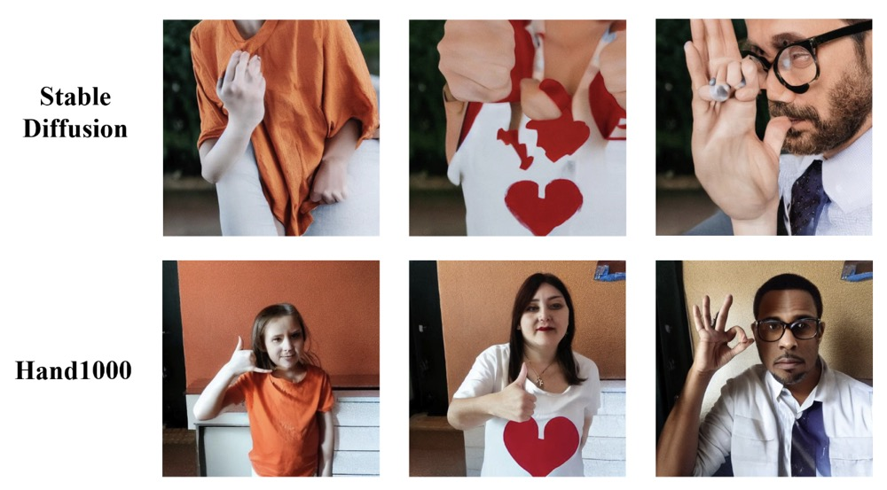
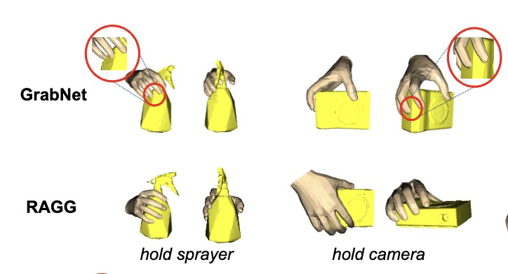
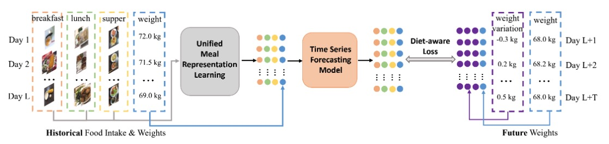

Please see Google Scholar for more recent works and arXiv papers. 2025  AAAI Hand1000: Generating Realistic Hands from Text with Only 1,000 Images Haozhuo Zhang, Bin Zhu, Yu Cao, Yanbin Hao The 39th Annual AAAI Conference on Artificial Intelligence (AAAI) , 2025 PDF Website  AAAI RAGG: Retrieval-Augmented Grasp Generation Model Zhenhua Tang, Bin Zhu, Yanbin Hao, Chong-Wah Ngo, Richang Hong The 39th Annual AAAI Conference on Artificial Intelligence (AAAI) , 2025 PDF Website 2024  ACM MM Navigating Weight Prediction with Diet Diary Yinxuan Gui, Bin Zhu, Jingjing Chen, Chong Wah Ngo, and Yu-Gang Jiang Proceedings of the 32st ACM International Conference on Multimedia (ACM MM) , 2024 PDF Website ECCV Enhancing Recipe Retrieval with Foundation Models: A Data Augmentation Perspective Fangzhou Song, Bin Zhu, Yanbin Hao and Shuo Wang European Conference on Computer Vision (ECCV) , 2024 PDF Code
 ECCV
ECCV